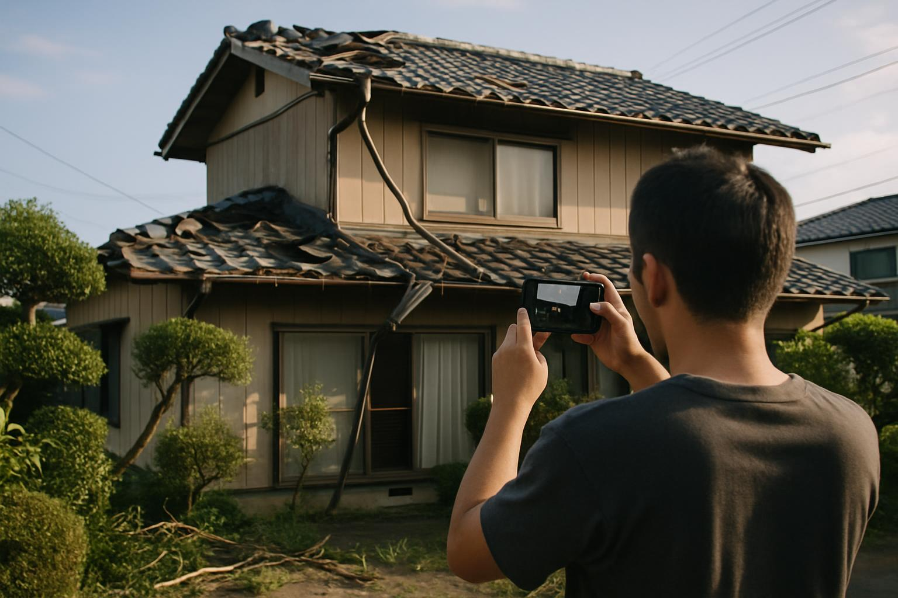

台風被害の補償を受けられるかは、加入している保険の内容と日頃の記録で決まります
台風シーズンの鹿児島では、「屋根の瓦が飛んだ」「雨どいが外れた」といった被害が空き家でも起こります。そのとき頼りになるのが火災保険ですが、空き家は住んでいる家と保険の扱いそのものが異なることは、あまり知られていません。
この記事では、空き家の火災保険・地震保険の入り方、台風被害で使える補償の範囲、請求でつまずきやすいポイントを整理します。
なぜ空き家の火災保険は「住宅」として入れないことがあるのか
火災保険は、建物の使われ方によって「住宅物件」「一般物件」などに分類されます。常時人が住んでいない建物は「住宅物件」と認められず、「一般物件」として扱われることがあります。一般物件になると、保険料が割高になる、加入できる商品が限られる、家財の補償を付けられない、といった違いが出てきます。
管理されておらず完全に無人の状態が続いていると、そもそも引き受けを断られるケースもあります。一方で、家財を残して定期的に利用している・帰省時に使っているといった実態があれば、別荘・季節利用の住宅として住宅物件のまま契約できることもあります。まずはいま加入している保険証券の「物件種別」を確認することが出発点です。
台風被害で使える「風災・水災」補償の基礎
「火災保険」という名前ですが、火事以外の災害も幅広く対象にできます。台風被害でとくに関係するのが風災・水災の補償です。
| 被害の例 | 対象になりやすい補償 |
|---|---|
| 強風で屋根瓦・棟板金が飛んだ | 風災 |
| 飛来物で窓ガラスや外壁が割れた | 風災／建物の破損 |
| 川の氾濫・大雨で床上浸水した | 水災（未加入だと対象外） |
| 長年の雨漏りで天井が傷んだ | 経年劣化とされ対象外になりやすい |
水災補償は外して契約していることも多く、ハザードマップ上で浸水リスクがある土地なのに未加入というケースは少なくありません。また、商品によっては「損害額20万円以上で支払い」といった条件や、自己負担額（免責金額）が設定されています。
地震保険は火災保険とセットでしか入れない
地震・噴火・津波による損害は、火災保険では補償されません。これらに備えるには地震保険が必要ですが、地震保険は単独では加入できず、火災保険に付帯する形でのみ契約できます。
桜島を抱える鹿児島では噴火に伴う被害も想定しておきたいところですが、空き家が一般物件扱いになっている場合、地震保険を付帯できないことがある点は事前に確認が必要です。
加入・見直しでやっておきたいこと
- 証券の「物件種別」（住宅物件／一般物件）と契約者の住所を確認する
- 風災・水災・破損汚損の各補償の有無と、免責金額・支払条件を確認する
- 家財を置いたままなら、家財の補償が必要かを検討する
- ハザードマップで水災・土砂災害のリスクを確認する
- 空き家であること・管理状況を保険会社に正しく伝える（告知義務）
空き家であることを伝えずに住宅物件のまま契約していると、いざ請求したときに告知義務違反を理由に減額・不払いとなるおそれがあります。面倒でも、実態に合った内容へ見直しておくほうが安全です。
TAMARIEでは、定期管理サービスの巡回時に建物の状態を写真付きで記録しています。台風の前後に点検記録を残しておくことで、被害が出た際の保険請求に使える資料を平時から積み上げておくことができます。